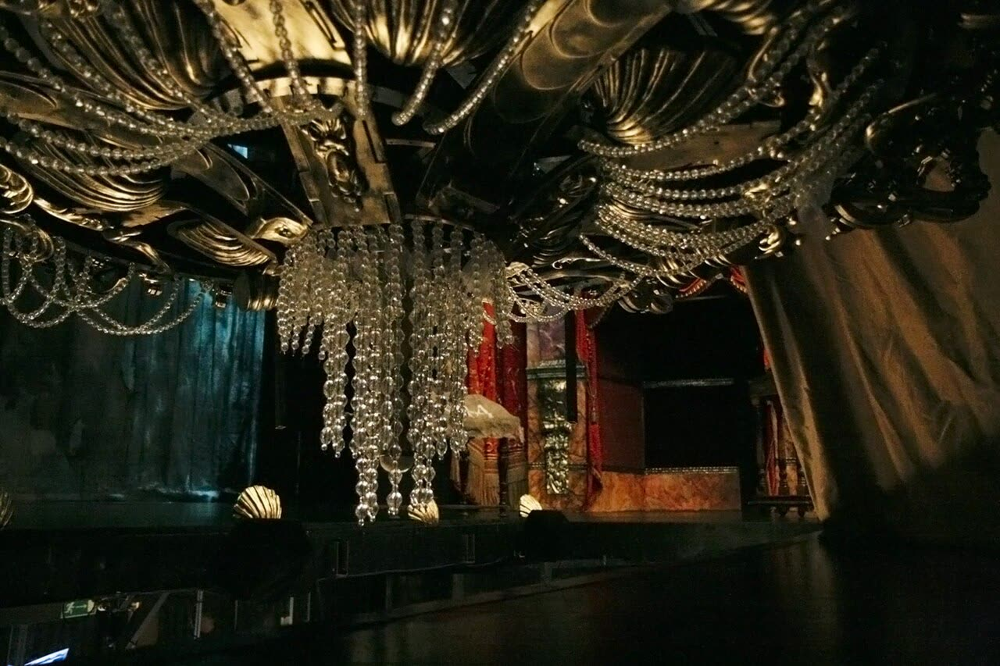

제1막
불이 켜진 돔
경매장의 뮤직 박스에서 시간이 접힙니다. 젊은 라울의 기억 속으로, 샹들리에가 아직 빛나던 극장이 돌아옵니다. 크리스틴이 무대에 서고, 유령의 수업이 시작됩니다.

The Phantom of the Opera
이야기
파리 오페라 하우스의 지하. 태어날 때부터 얼굴을 숨긴 작곡가가 살고 있습니다. 그는 코러스의 크리스틴 다에에게 노래를 가르치고, 극장은 점점 그의 악보가 됩니다.
사랑은 곧 집착이 됩니다. 후원자 라울이 옛 약속을 기억해 내고, 가면무도회가 열리면 유령은 다시 계단을 내려옵니다. 결말은 적지 않습니다. 오늘 밤, 객석에서 듣기를.


불이 켜진 돔, 그리고 가면무도회
제1막
경매장의 뮤직 박스에서 시간이 접힙니다. 젊은 라울의 기억 속으로, 샹들리에가 아직 빛나던 극장이 돌아옵니다. 크리스틴이 무대에 서고, 유령의 수업이 시작됩니다.
제2막
새해의 축제가 한창일 때 붉은 죽음이 계단을 내려옵니다. 새 오페라의 악보가 내던져지고, 극장은 그의 규칙을 따를 것인지 묻게 됩니다.

인물
넘버
가사는 무대에 맡기고, 이름만 적어 둡니다.
한국
라이선스와 내한이 번갈아 열렸습니다. 오늘 밤은 그 계보를 잇는 한 회입니다.

박수는 막이 내린 뒤에. 촬영은 없습니다.